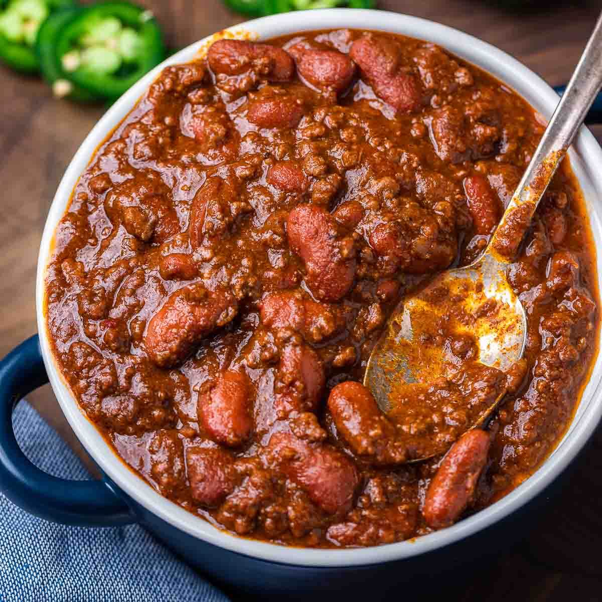

Recipes - Chili
Chili

This is a recipe to make chili in a crockpot. It's some pretty good chili. I honestly just kinda eyeball most of the ingredients and adjust by taste after it's cooked for an hour or two. I use vegetable powders primarily because I don't like for there to be too many chunky ingredients, outside of the meat and beans. More a personal preference than anything.
Ingredients
- Crockpot
- 2.25lbs Ground beef
- 1 can pinto beans
- 1 can dark red kidney beans
- 1 can light red kidney beans
- 48oz tomato juice
- Salt
- Black pepper
- Onion Powder
- Garlic powder
- Cayenne pepper powder
- Chili powder
- Chipotle Powder
- Diced jalapenos
- Tobasco sauce
Steps
- Brown your ground beef on the skillet, drain, and then add to your crockpot.
- Open your beans, drain the water, and add to the crockpot.
- Pour in your 48oz tomato juice.
- Add in diced jalapenos, as well as some of the juice.
- Add a dash of salt, and roughly a fist-sized serving of all other spices. Stir Thoroughly. The juice should be a reddish-brown, though more brown than red.
- Add Tobasco sauce to taste. Stir thoroughly
- Cover with lid and set crockpot to low for 8-10 hours.
- After 1-2 hours, open lid and stir. Sample the juice and add more spices/Tobasco as needed, to taste.
- Allow to cook 6-8 hours. Chili is good to server after no fewer than 4 hours, but is best served between 6-8 hours.
- Add a shitload of cheese. Just like, a ridiculous amount of cheese. I'm talking enough cheese to drown the Empire State Building. Though be sure the cheese is shredded, not liquid. That way the fact you drowned a building stands out that much more.
- Enjoy your chili (and probable war crime), nerd.